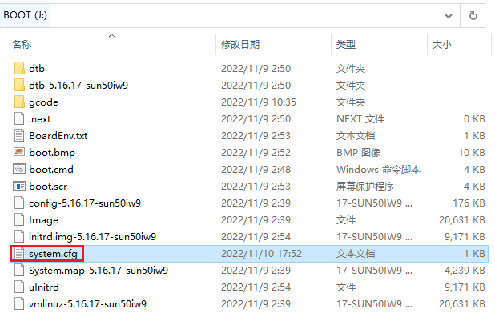
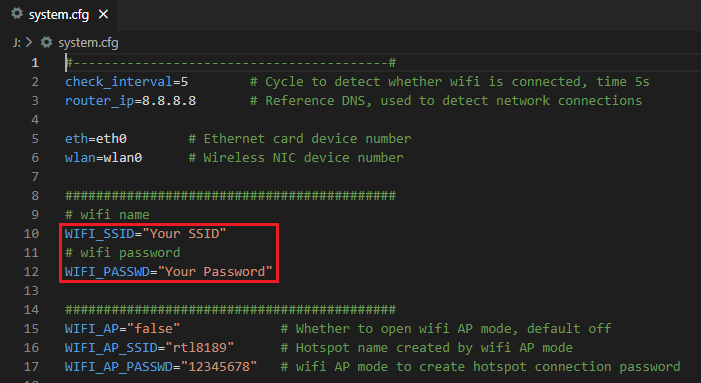
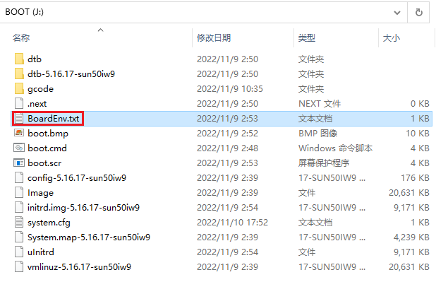
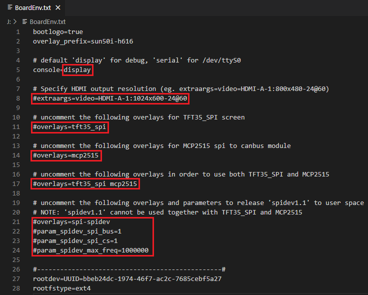

Network Settings
Ethernet
- Plug-and-play with an Ethernet cable, no additional setup required.
WiFi Settings
- After the OS writes to the SD card, there is a FAT32 partition named
BOOT, opensystem.cfgfile withNotpad,Notpad++orVSCode.
 - Set
WIFI_SSIDas your actual wifi name andWIFI_PASSWDas your actual wifi password, The space character can be parsed normally without additional escape character. For example:WIFI_SSID="CB1 Tester"

Overlays Settings
- After the OS writes to the SD card, there is a FAT32 partition named
BOOT, openBoardEnv.txtfile withNotpad,Notpad++orVSCode.
 Set as required as shown in the figure below.
- The default value is
console=display, This means that theUART0of CB1 is used as the debugging port by default. We can useMobaXtermto connect to CB1 by UART0 and debug. If klipper wants to useUART0to control the motherboard, we need to set it toconsole=serial, now klippe can useUART0as/dev/ttyS0. - CB1 will automatically identify the HDMI resolution, but if your HDMI screen cannot report the resolution through the EDID normally, we can forcibly specify the resolution of CB1 output by uncomment
extraargs=videoand set the actual resolution.
For example:
BTT-HDMI7 resolution = 1024x600:extraargs=video=HDMI-A-1:1024x600-24@60
BTT-HDMI5 resolution = 800x480:extraargs=video=HDMI-A-1:800x480-24@60 - Uncomment
overlays=tft35_spito enable TFT35 SPI screen. - Uncomment
overlays=mcp2515to enable MCP2515 spi to canbus module. - Uncomment
overlays=tft35_spi mcp2515If you want to use both TFT35 SPI screen and MCP2515 spi to canbus module - uncomment the following overlays and parameters to release 'spidev1.1' to user space, And 'spidev1.1' cannot be used together with TFT35_SPI and MCP2515.
overlays=spi-spidev param_spidev_spi_bus=1 param_spidev_spi_cs=1 param_spidev_max_freq=1000000
- The default value is
NOTE: TFT35 SPI and MCP2515 multiplex a group of SPI1
SPI1_CLK=PH6 SPI1_MISO=PH8 SPI1_MOSI=PH7 TFT35_SPI_CS=PC7 MCP2515_CS=PC11 MCP2515_IRQ=PC9